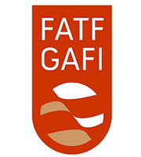
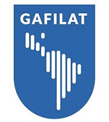

Organismos internacionales
Grupo de Acción Financiera Internacional (GAFI)
 En 1989 se creó el organismo intergubernamental denominado Grupo de Acción Financiera Internacional (GAFI o FATF, por sus siglas en inglés), con el objetivo de establecer normas y promover la efectiva implementación de medidas legales, reglamentarias y operativas para combatir el lavado de activos, el financiamiento del terrorismo y otras amenazas a la integridad del sistema financiero. El GAFI se encarga de desarrollar y promover políticas, en los niveles nacional e internacional, para llevar a cabo reformas legislativas y reglamentarias que permitan combatir el Lavado de Activos y Financiamiento del Terrorismo (LA/FT).
A la fecha, el GAFI está conformado por 37 miembros (35 países más la Comisión Europea y el Consejo de Cooperación para los Estados Árabes del Golfo Pérsico) y 8 grupos regionales como organismos asociados; entre los que se encuentra el Grupo de Acción Financiera de América Latina (GAFILAT). La estructura del GAFI comprende a un Presidente, un Vicepresidente, un Secretario Ejecutivo y cinco grupos de trabajo.
El GAFI ha desarrollado una serie de recomendaciones que son el estándar internacional para la lucha contra el lavado de activos, el financiamiento del terrorismo y la proliferación de armas de destrucción masiva. Las primeras recomendaciones fueron publicadas en 1990, seguidamente fueron revisadas en 1996, 2001, 2003 y más recientemente en 2012, con el objeto de garantizar que se mantengan actualizadas y relevantes, ya que están destinados a ser de aplicación universal.
Ir a la página del GAFI
Recomendaciones del GAFI
Grupo de Acción Financiera de Latinoamérica (GAFILAT)
 El GAFI supervisa el progreso de sus miembros en la aplicación de las medidas necesarias para cumplir con lo dispuesto en las 40 Recomendaciones mediante evaluaciones mutuas periódicas. En el caso de los países no miembros del GAFI, estos son evaluados por los grupos regionales a los que pertenecen, que para el Perú es el GAFILAT.
FSRB – Grupo Regional del GAFI, que agrupa a 17 países. Perú es miembro fundador (2000).
En la IV Ronda de Evaluaciones Mutuas participan Cuba, Costa Rica, Guatemala, Honduras, Nicaragua, México, Panamá, República Dominicana, Colombia (3 últimos en proceso). Perú ha participado en 2003, 2005, 2008, 2017/2018.
Ir a la página de Gafilat